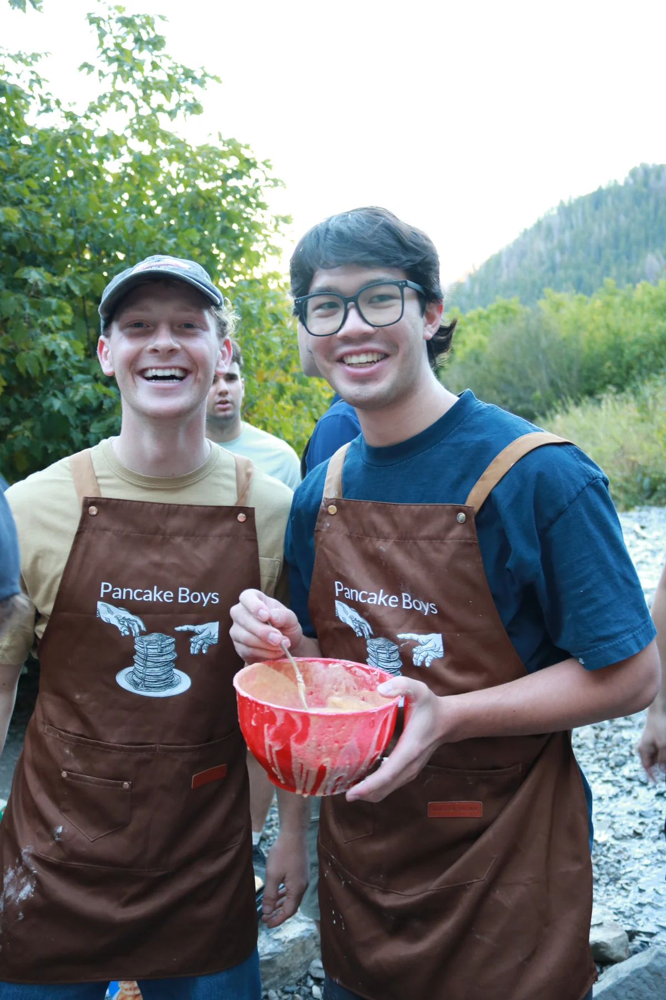
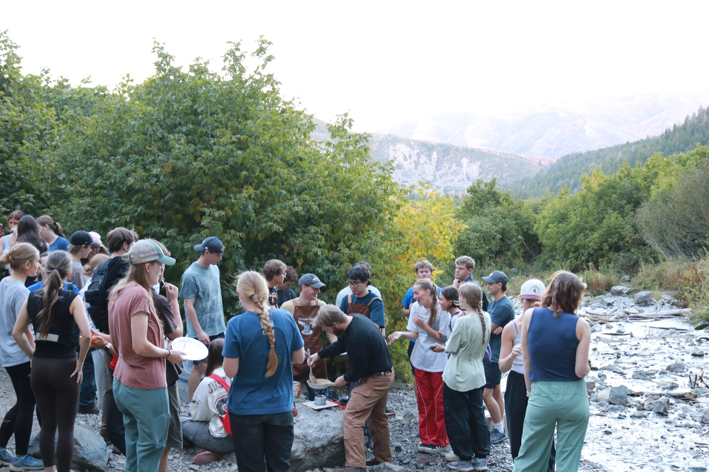
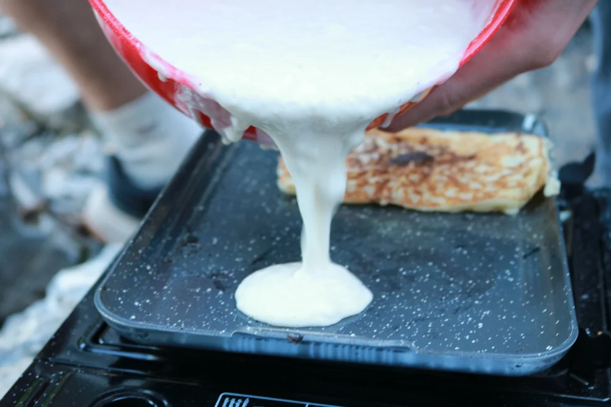
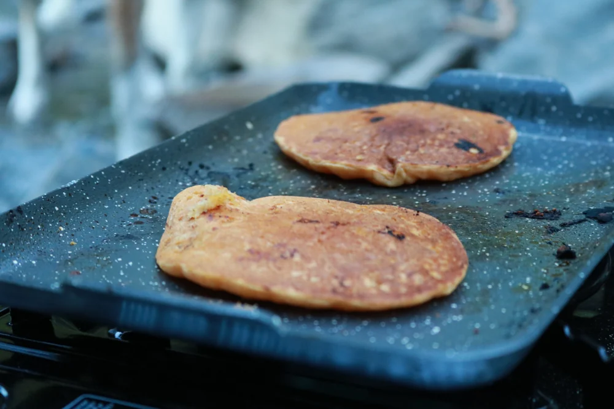
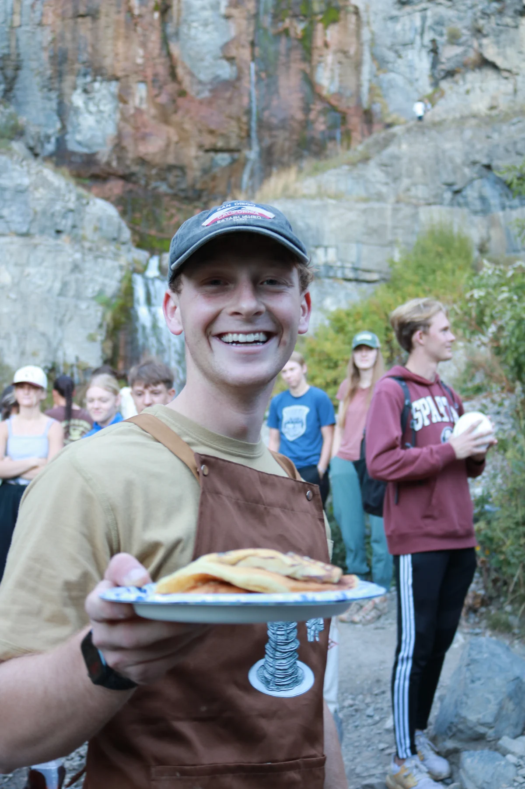

Water. Layers. Good shoes. A plate and a fork if you want syrup. A friend, if you want. An appetite, definitely.
02 / HOW WE GOT HEREA GRIDDLE & A QUESTIONABLE IDEA
IT STARTED WITH A BAD BUSINESS IDEA.
We thought we could hike Timp and sell pancakes at a premium, pulling in a fortune. Maybe we could have. Pancakes on mountains sounded so fun, and who wouldn't love a little extra cash in the piggy bank? Except, the more we thought about it, the less it seemed like a good idea. Would it be worth it? Did we really want to hike places just to rip people off?
We didn't. We still wanted to make pancakes on mountains, so we figured we'd do it once or twice just for fun. The flicks were tough. The griddle kept us warm. People were smiling. “Maybe just one more hike,” we thought.
At our next hike, 50 people we didn't know pulled up, and we realized this might be something bigger than we'd anticipated. We're excited to hand you a pancake on the next hike.

THE APRONS MADE IT OFFICIAL.
MORE FROM THE TRAIL
Drag or swipe to browse hike photos. Use left and right arrow keys when the strip is focused. Pause stops the automatic movement.



03 / FIELD NOTESGOOD COMPANY. BETTER BREAKFAST.
COME FOR THE PANCAKES. STAY FOR THE PEOPLE.
STEWART FALLSFIFTY NEW FACES.THE BREAKFAST PART OF THE HIKE.BEST EATEN OUTSIDE.
A NOTE FROM THE TRAIL
We want to make tons of pancakes. It brings us joy.
See you out there.

04 / SOMETHING WORTH WEARING
OFF THE TRAIL. STILL ONE OF THE BOYS.
It started with custom aprons. Something you can take home is next.
MERCH IS IN THE WORKS
When it's ready, you'll find it right here.
05 / KEEP IT GOINGMORE PEOPLE. MORE PANCAKES.
GOOD THINGS TAKE A LITTLE BATTER.
The pancakes stay free. Support helps us bring the mix, carry the gear, and keep showing up.
We're building ways to help through merch, contributions, and partnerships. The goal is simple: more people outside, together.